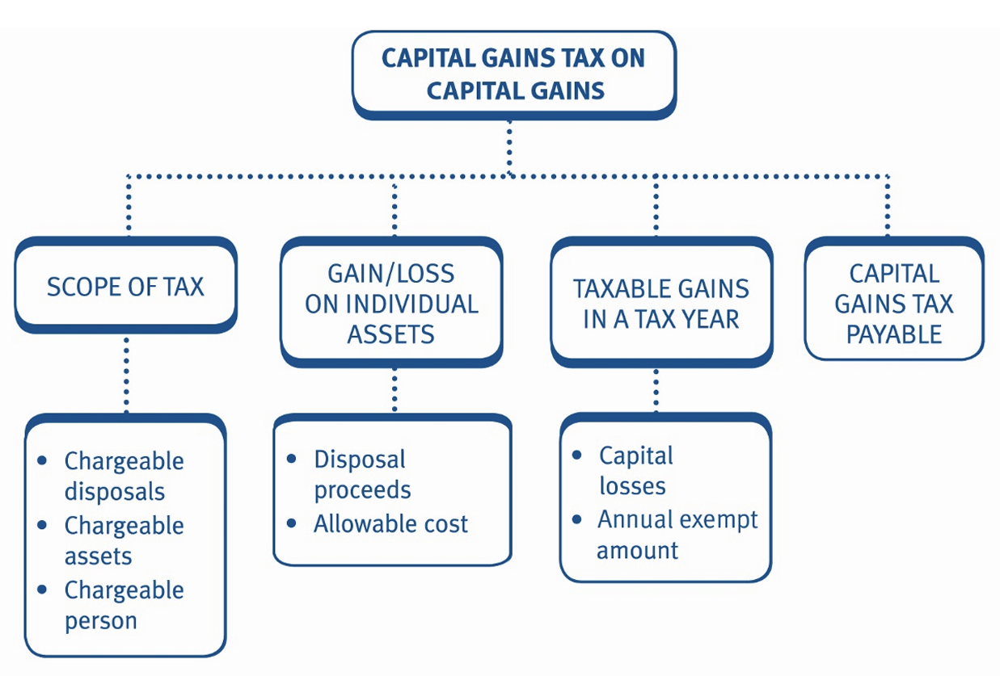

Chapter 17: Computation of gains and tax payable
- describe the scope of capital gains tax.
- recognise those assets which are exempt.
- compute and explain the treatment of capital gains.
- compute and explain the treatment of capital losses.
- compute the amount of capital gains tax payable.
- understand basic capital gains tax planning.

Scope of capital gains tax
Capital gains tax (CGT) is charged on gains arising on chargeable persons making chargeable disposals of chargeable assets.
Chargeable persons
Chargeable persons include individuals and companies.
In these CGT chapters we are concerned with disposals by individuals.
- Individuals who are UK resident in the tax year in which the disposal takes place are subject to capital gains tax on their gains.
- UK resident individuals are subject to UK CGT on all disposals of chargeable assets, regardless of where in the world the assets are situated.
- Non-UK residents only pay UK CGT on the disposal of interests in UK land. However, this is not examinable.
Chargeable assets
All forms of capital assets, wherever situated, are chargeable assets.
Common examples include:
- Freehold land and buildings
- Goodwill
- Unquoted shares
- Quoted shares
- Certain types of chattels – Chapter 18
Note: Chattels are tangible movable assets (e.g. furniture, plant and machinery).
Exempt assets
Exempt assets include:
- Motor vehicles (including vintage cars)
- Main residence
- Cash
- Certain types of chattels – Chapter 18
- Investments held within an ISA
- Qualifying corporate bonds (QCBs)
- Gilt‑edged securities
- NS&I certificates
- Foreign currency for private use
- Receivables
- Trading inventory
- Prizes and betting winnings
- Decorations for valour (unless purchased)
Calculation of capital gain/loss on individual disposals
An individual is subject to CGT on the total taxable gains arising on the disposal of all assets in a tax year.
The following steps are carried out to compute the capital gains tax payable by an individual for a tax year:
| Step | Description |
|---|---|
| 1 | Calculate the chargeable gain/allowable loss arising on the disposal of each chargeable asset separately |
| 2 | Calculate the net chargeable gains arising in the tax year = (chargeable gains less allowable losses) |
| 3 | Deduct the annual exempt amount |
| 4 | Deduct capital losses brought forward = taxable gains |
| 5 | Calculate the CGT payable for the tax year. |
Net disposal proceeds
The disposal proceeds used in the computation is normally the sale proceeds received.
Incidental costs arising on disposal are deducted from the gross proceeds (e.g. auctioneer’s fees, estate agent fees).
However, market value is substituted for actual gross proceeds received where:
- the deal was not made at arm’s length (e.g. a gift)
- the law assumes that it was not made at arm’s length (e.g. transfers between connected parties).
At TX, an individual is ‘connected’ with close relatives (i.e. parents, siblings and children).
Allowable expenditure
The types of expenditure that rank as allowable deductions are:
- cost of acquisition (e.g. purchase cost)
- expenditure on enhancing the value of the asset (improvement expenditure)
- expenditure incurred to establish, preserve or defend the taxpayer’s title to the asset
- incidental costs arising on the acquisition of the asset. Where an individual acquires an asset as a gift (or from a sale for less than market value):
- the cost of acquisition = market value of the asset at the date of the gift (or sale at undervaluation).
Where an individual inherits an asset on death the cost of acquisition = market value of the asset at the date of the death (i.e. probate value).
Example 1: Net chargeable gain
Sergei sold an antique vase for £12,000 and a painting for £20,000 during the tax year. He incurred auctioneer’s fees of 1% of the proceeds. He acquired the assets for £13,000 and £7,000, respectively.
Calculate the net chargeable gain arising.
Solution
Vase
| £ | |
|---|---|
| Sale proceeds | 12,000 |
| Less: Allowable selling costs (1% auctioneer’s fees) | (120) |
| Net sale proceeds | 11,880 |
| Less: Cost of acquisition | (13,000) |
| Allowable loss | (1,120) |
Painting
| £ | |
|---|---|
| Sale proceeds | 20,000 |
| Less: Allowable selling costs (1% auctioneer’s fees) | (200) |
| Net sale proceeds | 19,800 |
| Less: Cost of acquisition | (7,000) |
| Chargeable gain | 12,800 |
| Less: Allowable loss (Vase) | (1,120) |
| Net chargeable gains | 11,680 |
Example 2: Net chargeable gain
On 1 August 2025, Margaret sold a holiday villa to her sister for £25,000. Its market value at that date was £100,000.
Margaret had acquired the villa on 1 June 2009 for £20,000 and had paid legal fees on acquisition of £500. On 1 May 2014, she had added a conservatory at a cost of £10,000.
Calculate the chargeable gain arising on the sale of the villa.
Solution
Example 3: Net chargeable gain
Puteri sold a holiday cottage for £75,000 on 13 August 2025. It cost £53,500 in May 2011 and was extended in September 2015 at a cost of £16,000. The estate agent and solicitor fees for the purchase totalled £2,300 and for the sale totalled £5,400.
She also sold her grandmother’s engagement ring for £12,000 in August 2025. She had inherited the ring on the death of her grandmother in August 2017 when the ring was valued at £9,000.
Calculate the net chargeable gain arising in the tax year 2025/26.
Solution
Calculation of CGT payable
An individual pays capital gains tax on the total taxable gains arising on the disposal of all assets in a tax year.
Pro forma capital gains tax payable computation – 2025/26
| £ | |
|---|---|
| Net chargeable gains for the tax year | X |
| Less: Annual exempt amount (2025/26) | (3,000) |
| Less: Capital losses brought forward (covered later) | (X) |
| Taxable gains | X |
| CGT liability (taxable gains × appropriate tax rate) | X |
| Less: Payment on account re residential property disposals | (X) |
| CGT payable | X |
Annual exempt amount (AEA)
Every individual is entitled to an annual exempt amount (AEA) for each tax year.
For 2025/26, the AEA is £3,000.
The AEA is deducted from net chargeable gains for the tax year i.e. after current year capital losses but before capital losses brought forward.
If an individual’s net chargeable gains after current year capital losses for the tax year are:
- £3,000 or less; the individual is not chargeable to tax in excess of £3,000; the individual is chargeable to tax on the excess (unless these are covered by capital losses brought forward).
If the AEA is not utilised in a particular tax year, then it is wasted. It cannot be carried forward or backward to another tax year.
For the purpose of the examination:
Chargeable gain(s) means the gain(s) before deducting the annual exempt amount and any brought forward capital losses.
Taxable gain(s) means the gain(s) after deducting the annual exempt amount and any brought forward capital losses.
Capital losses
Current year capital losses
Capital losses arising on assets in the current tax year are set off:
- against chargeable gains arising in the same tax year
- to the maximum possible extent, (i.e. they cannot be restricted to avoid wasting all or part of the AEA).
Any unrelieved/unused capital losses are carried forward to offset against chargeable gains in future years.
Brought forward capital losses
Brought forward capital losses are offset against the first available net chargeable gains after the AEA. Any remaining brought forward losses are carried forward for future offset against future chargeable gains.
Example 4: Taxable Gains
Tom and Jerry made chargeable gains and allowable losses for the tax years 2024/25 and 2025/26 as set out below.
| Tom (£) | Jerry (£) | |
|---|---|---|
| 2024/25 | ||
| Chargeable gains | 9,000 | 4,000 |
| Allowable losses | 8,000 | 7,000 |
| 2025/26 | ||
| Chargeable gains | 11,900 | 5,000 |
| Allowable losses | 2,000 | 1,000 |
Calculate the taxable gains for Tom and Jerry for the tax years 2024/25 and 2025/26 and the amount of any losses carried forward.
Solution
Tom – 2024/25
| £ | |
|---|---|
| Chargeable gains | 9,000 |
| Less: Allowable losses – current year | (8,000) |
| Net chargeable gains | 1,000 |
Net chargeable gains are covered by the AEA ‘3K’. There are no losses to carry forward to the tax year 2025/26.
Tom – 2025/26
| £ | |
|---|---|
| Chargeable gains | 11,900 |
| Less: Allowable losses – current year | (2,000) |
| Net chargeable gains | 9,900 |
| Less: AEA | (3,000) |
| Taxable gains | 6,900 |
Tom is taxed on gains of £6,900 in 2025/26.
Jerry – 2024/25
| £ | |
|---|---|
| Chargeable gains | 4,000 |
| Less: Allowable losses – current year | (4,000) |
| Net chargeable gains | 0 |
Jerry is unable to use his 2024/25 AEA since his gains are all covered by current year losses. He has losses of £3,000 (£7,000 – £4,000) to carry forward to the tax year 2025/26.
Jerry – 2025/26
| £ | |
|---|---|
| Chargeable gains | 5,000 |
| Less: Allowable losses – current year | (1,000) |
| Less: AEA | (3,000) |
| 1,000 | |
| Less: Losses brought forward (2024/25) | (1,000) |
| Taxable gains | 0 |
Jerry used £1,000 of his losses brought forward. He still has losses of £2,000 (£3,000 – £1,000) to carry forward against future net chargeable gains after the AEA.
Example 5: Taxable Gains
Gigi and Zayn made chargeable gains and allowable losses for the tax years 2024/25 and 2025/26 as set out below.
| Gigi (£) | Zayn (£) | |
|---|---|---|
| 2024/25 | ||
| Chargeable gains | 12,000 | 5,000 |
| Allowable losses | 10,000 | 9,000 |
| 2025/26 | ||
| Chargeable gains | 20,800 | 6,000 |
| Allowable losses | 10,700 | 2,200 |
Calculate the taxable gains for Gigi and Zayn for the tax years 2024/25 and 2025/26 and the amount of any losses carried forward at the end of 2024/25.
Assume the 2025/26 rates and allowances apply throughout.
Solution
Computation of CGT payable
CGT is payable on the taxable gains arising in a tax year as follows:
- The rate of CGT is dependent upon the amount of a taxpayer’s total taxable income (i.e. after deduction of the personal allowance) and the type of assets disposed of.
- Taxable gains are taxed after taxable income (i.e. as the top slice), but do not combine income and gains in one computation.
- Generally, where taxable gains fall into the basic rate band, CGT is at 18%.
- To the extent that any gains (or any part of gains) exceed the basic rate band, they are taxed at 24%.
- If the basic rate band is extended due to gift aid donations or personal pension contributions, the extended basic rate band is also used to establish the rate of CGT.
- Any unused income tax personal allowance cannot be used to reduce taxable gains.
If an examination question requires calculation of income tax and CGT, two separate calculations must be prepared; one for income tax, and one for CGT.
Rates of CGT
CGT is paid at the normal rates, unless the gain is eligible for business asset disposal relief or investor relief (see chapter 20).
- Gain falling in basic rate band: 18%
- Gain in excess of basic rate band: 24%
UK residential property disposals
In practice, a taxpayer’s main residential property (i.e. the taxpayer’s home) will be exempt from CGT under the private residence relief rules (PRR) (Chapter 20). However, where the gain on the disposal of a residential property is not fully exempt (e.g. on an investment property which is let out) it is taxed at the rates given above.
Disposals of UK residential property must be reported to HM Revenue & Customs (HMRC) within 60 days of completion, along with a payment on account of the relevant CGT liability.
The rate of CGT is determined using an estimate of the individual’s income at the time of the disposal to estimate how much basic rate band will be remaining.
In questions involving the calculation of the tax due, an indication of whether the taxpayer is basic or higher rate or an estimate of the income will be provided.
Brought forward losses, current year capital losses realised prior to the residential property disposal and the AEA may be offset against the gain when calculating the tax due. Any losses incurred subsequently are ignored.
There is no need to submit a return if no CGT is due, for example if the gain is covered by the AEA, private residence relief or the asset is sold at a loss.
All disposals made during a tax year (including any residential property disposals) are included in the final tax return. Any payment on account made is deducted from the CGT liability to reach the final amount of CGT payable. The amount paid may be provided or you may be required to calculate it.
If a repayment is due it will be claimed on the CGT return. Calculations of payments on account on multiple residential property disposals are not examinable.
Example 6: CG Tax payable
In the tax year 2025/26 Jane realised the following chargeable gains:
- Residential property: £31,300
- Antique table: £20,000
Jane has taxable income of £28,700 in the tax year 2025/26.
Jane estimated the CGT due & made a payment on account of £7,860.
Calculate Jane’s capital gains tax payable for the tax year 2025/26.
Solution
| £ | |
|---|---|
| Residential property | 31,300 |
| Antique table | 20,000 |
| Total gains | 51,300 |
| Less: AEA | (3,000) |
| Taxable gains | 48,300 |
| £ | |
|---|---|
| £9,000 × 18% | 1,620 |
| £39,300 × 24% | 9,432 |
| 48,300 | |
| Capital gains tax liability | 11,052 |
| Less: Payment on account re residential property | (7,860) |
| CGT payable | 3,192 |
Example 7: CG Tax payable
In the tax year 2025/26 Jacob realised the following chargeable gains:
- Residential property: £7,300
- Necklace: £20,000
- Land: £10,000
Jacob expected to be a higher rate taxpayer when the residential property disposal was made. His only income was employment income of £44,270 and he paid contributions of £4,000 into his personal pension scheme during the tax year 2025/26.
Calculate Jacob’s capital gains tax payable for the tax year 2025/26.
Solution
Payment of CGT
CGT is due as follows.
- On 31 January following the tax year (i.e. 31 January 2027 for 2025/26).
- Payments on account for UK residential property are deducted from the final liability.
Example 8: CG Tax payable and state the due date
Eevi sold a commercial investment property on 1 July 2025 for £641,000. She had acquired the building for £80,000 in June 2007 and had extended it at a cost of £30,000 in June 2009.
Eevi also disposed of a painting on 1 September 2025 for £20,000, incurring auctioneer’s fees of 1%. She had acquired the painting for £35,000 in April 2009.
Eevi had capital losses brought forward of £15,300. Eevi’s only source of income in the tax year 2025/26 is trading income of £40,270.
Calculate Eevi’s capital gains tax payable for the tax year 2025/26 and state the due date for payment.
Solution
CGT planning opportunities
Delaying disposals until the following tax year
Tax saving
If the AEA has already been utilised in a particular tax year, delaying the disposal of an asset until the following tax year will:
- allow the offset of the later year’s AEA against any gain arising
- thereby saving tax on a further £3,000.
If the individual is a basic rate taxpayer, and taxable income is lower in a subsequent tax year, delaying the disposal would mean that:
- more of the basic rate band would be available, and
- therefore more of the resulting taxable gain could be taxed at 18%.
Cash flow advantage
- Gains realised on disposals up to and including 5 April 2026 are taxable in the tax year 2025/26 and the associated CGT is payable by 31 January
- If disposals later in the tax year can be delayed until 6 April 2026 or later:
- the gain is realised in the tax year 2026/27, and
- any CGT is payable one year later, by 31 January 2028.
Selling assets in tranches
Where assets can be split and sold piecemeal (e.g. shares), selling them in tranches in different tax years can allow the use of more than one AEA and result in a lower total taxable gain overall.